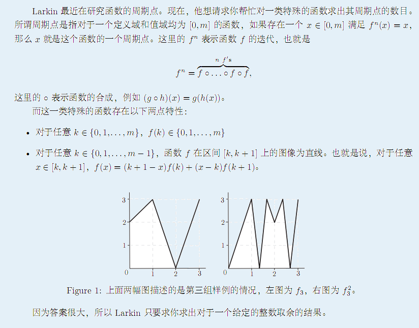

由多组数据组成。每一组数据的第一行包含一个整数 m。接下来的一行描述函数 f 的情况，这一行包含 m +1 个整数 f(0),f(1)......f(m)，均介于 0 到 m 之间。每一组数据的最后一行包含两个整数，n 和用来取余的整数 mod。

由多组数据组成。每一组数据的第一行包含一个整数 m。接下来的一行描述函数 f 的情况，这一行包含 m +1 个整数 f(0),f(1)......f(m)，均介于 0 到 m 之间。每一组数据的最后一行包含两个整数，n 和用来取余的整数 mod。
对于每一组输入数据输出一个答案，表示这个函数的周期点的个数对于
mod 取余的值。如果答案为无穷大则输出 Infinity。
2
2 0 2
2 10
3
0 1 3 2
1 137
3
2 3 0 3
20 10000
4
Infinity
9074对于 100% 的数据，1 <= m <= 80; 1<= n <= 5000; 1<= mod<= 10000，数据组数不多于 10 组。